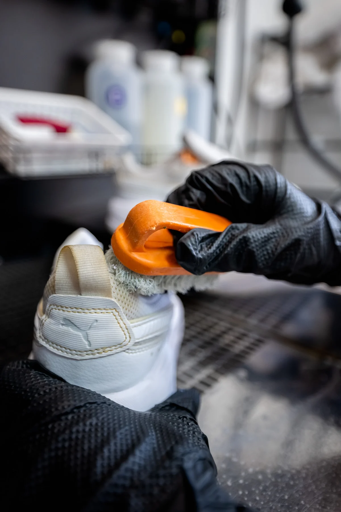
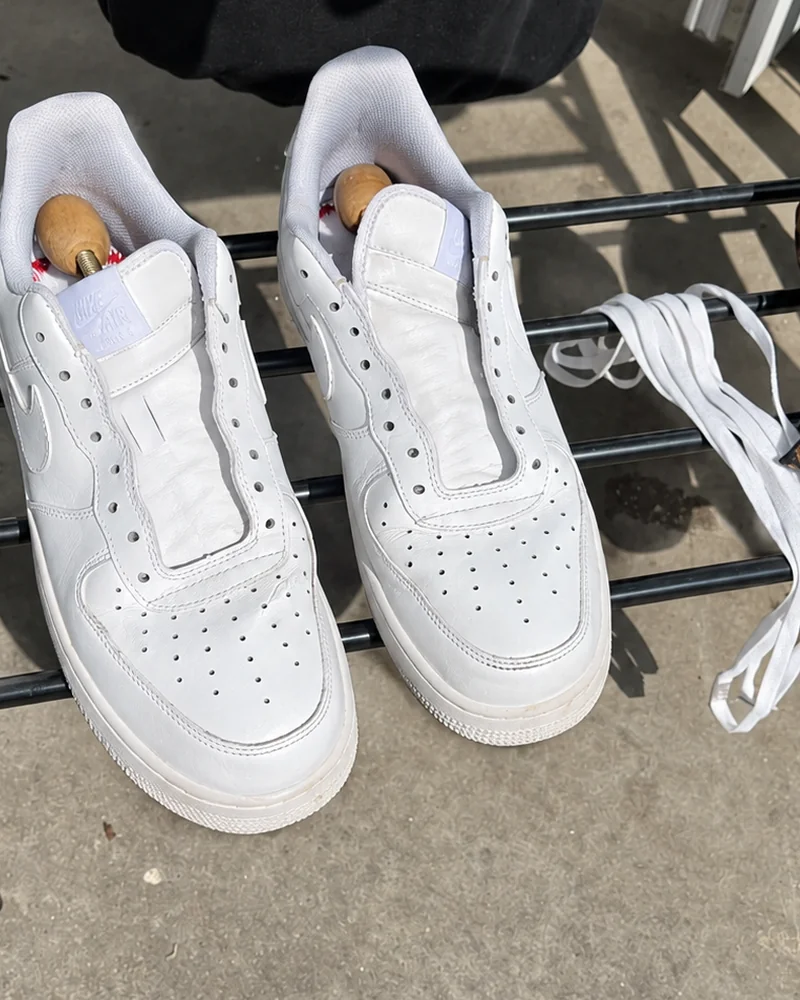
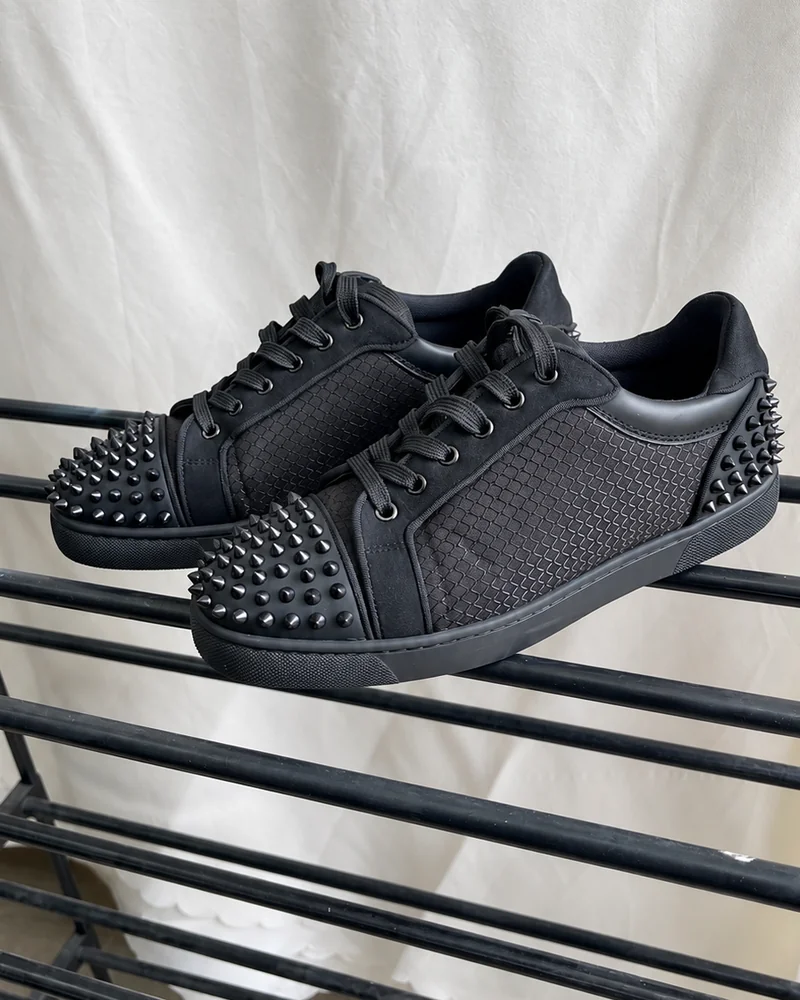
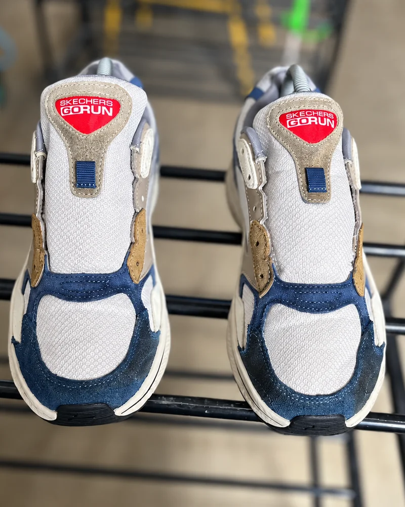
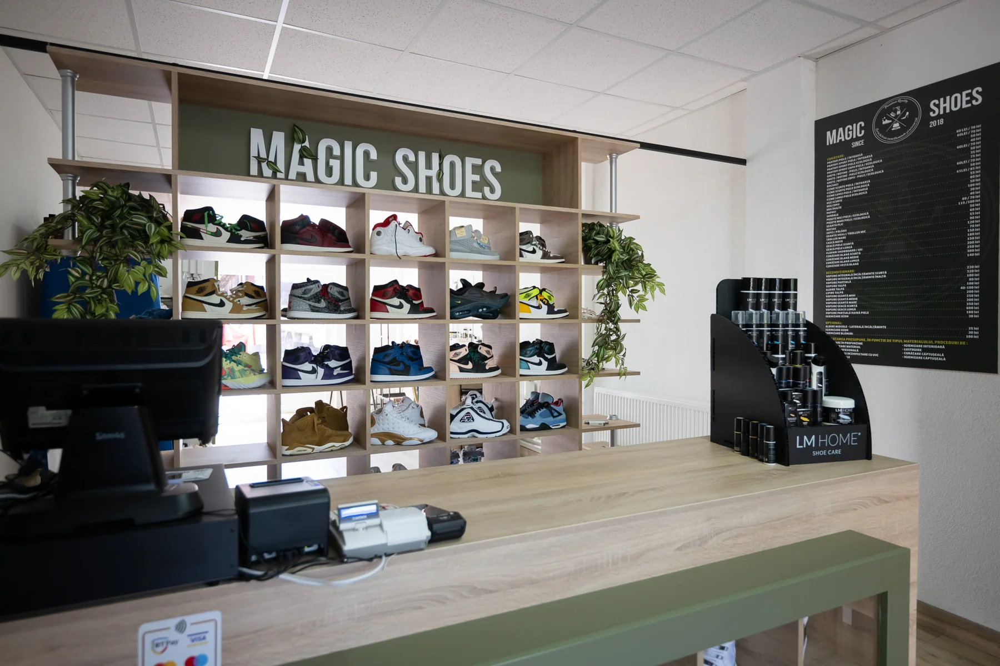

Curățare
în profunzime
Îndepărtăm murdăria și îngrijim încălțămintea din piele, textil sau piele întoarsă, prin tratamente adaptate.
Despre perechea taPantofii buni merită încă o poveste.
Le redăm prospețimea, cu grijă pentru material
și atenție la fiecare detaliu.

01 — CE FACEM
De la sneakerșii de zi cu zi la perechea pentru ocazii speciale. Alegem îngrijirea în funcție de material și de starea fiecărui articol.
Îndepărtăm murdăria și îngrijim încălțămintea din piele, textil sau piele întoarsă, prin tratamente adaptate.
Despre perechea taVopsire, albirea tălpilor și lipire de tălpi. Evaluăm întâi încălțămintea și îți spunem ce putem face pentru ea.
Hai să vedem ce se poateCurățare pentru genți și accesorii din piele, tratamente de îngrijire și igienizare cu ozon pentru încălțăminte.
Spune-ne ce ai nevoieFiecare pereche e diferită. Trimite-ne câteva fotografii pe WhatsApp pentru detalii despre preț și serviciul potrivit.
02 — ÎNAINTE & DUPĂ
Praful, urmele de zi cu zi, albul care nu mai e chiar alb. Uneori, perechea preferată are nevoie doar de atenția potrivită.
↔ Glisează și descoperă diferențaȘi perechea mea merităDIN ATELIERUL MAGICSHOES
Trei perechi, fiecare cu povestea ei. Alege „Înainte” sau „După” și descoperă lucrările din atelier.

DUPĂ CURĂȚARE
DUPĂ CURĂȚARE
DUPĂ ÎNGRIJIREFotografii din atelier, surprinse din unghiuri diferite. Imaginile „După” au ajustări de lumină și culoare pentru prezentare.

ORADEA, STR. LĂPUȘULUI 4203 — ATELIERUL NOSTRU
În spatele fiecărei perechi curate e muncă atentă. La Magicshoes, ne uităm la material, la cusături, la tălpi și la tot ce face încălțămintea ta specială.
Ne găsești în Oradea. Treci pe la noi cu perechea preferată sau trimite-ne mai întâi o fotografie pe WhatsApp.
Găsește-ne pe Google MapsSIMPLU, DE LA PRIMUL MESAJ
Deschizi WhatsApp și ne arăți perechea sau accesoriul care are nevoie de îngrijire.
Îți recomandăm serviciul potrivit și discutăm prețul, durata și predarea în atelier.
Curățăm și îngrijim cu atenție, apoi te anunțăm când poți ridica articolele.
BINE DE ȘTIUT
Prețul depinde de material, de starea încălțămintei și de serviciile necesare. Trimite-ne câteva fotografii pe WhatsApp și îți oferim detaliile înainte de a începe.
Durata diferă în funcție de material, tratament și lucrările din atelier. Îți comunicăm un termen când stabilim serviciul potrivit pentru perechea ta.
Da, oferim îngrijire adaptată materialului. Evaluăm mai întâi fiecare articol și discutăm cu tine opțiunile și limitele tratamentului.
Unele pete și urme de uzură pot rămâne, în funcție de material și de vechimea lor. Îți spunem ce rezultate sunt posibile după evaluare.
PERECHEA PREFERATĂ TE AȘTEAPTĂ.
Trimite-ne o fotografie. De aici, ne ocupăm împreună de detalii.
Hai pe WhatsAppNE GĂSEȘTI AICI
Strada Lăpușului 42PROGRAM ATELIER